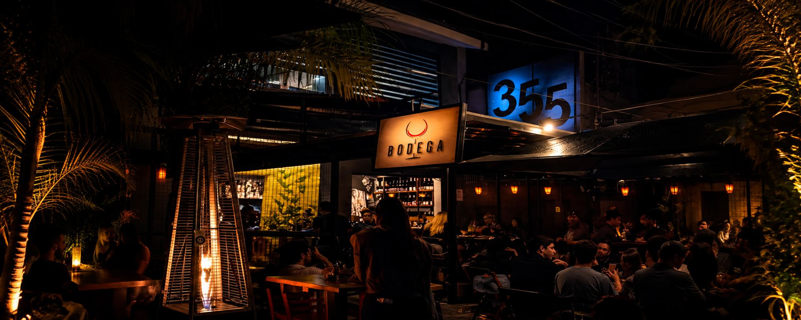

Queijos premiados
Canastra, Alagoa, Tulha, Mantiqueira e Porão — queijos mineiros reconhecidos entre os melhores do Brasil e do mundo.

Poços de Caldas · desde 2021
Charcutaria, queijos mineiros, fondues
e vinhos de inverno.
“A Bodega é a extensão da nossa casa.”
Aberto agora · até 23h
Nossa história
Felipe Nishida, idealizador da Bodega, sempre gostou de se reunir com os amigos e a família para petiscar, tomar boas bebidas e jogar conversa fora. Foi em um desses encontros que surgiu a ideia de construir um local aconchegante e agradável que pudesse transmitir esses mesmos valores a outras pessoas.
Então, em 2021, nasceu a Bodega — nome cujo significado é “pequena venda de secos e molhados”. Desde o início prezamos pela qualidade dos produtos, buscando insumos artesanais de produtores locais e focando sempre no melhor atendimento. Afinal, a Bodega é a extensão de nossa casa, e fazemos questão que cada um sinta esse mesmo aconchego.
Em 2024, com a chegada de Waldemar Netto — amante de boa gastronomia e conhecedor de bares e restaurantes do país e do mundo —, a Bodega ganhou ainda mais identidade.
Sejam muito bem-vindos.
Com carinho, equipe Bodega.
Canastra, Alagoa, Tulha, Mantiqueira e Porão — queijos mineiros reconhecidos entre os melhores do Brasil e do mundo.
A Bodega prioriza e valoriza os produtores locais. Vinhos para viagem têm 10% de desconto.
Drinks feitos para serem sentidos, por Leonardo Willian — clássicos bem executados e criações da casa.
Queijos Canastra, Alagoa, Tulha, Mantiqueira e Porão · Charcutaria Ceratti · Café Fazenda Retiro Ponte Preta · Vinícolas Arpuro, Casa Geraldo, Primeira Estrada, Barbara Eliodora, Davo, Três Batalhas, Terra Nossa e Maria Maria
Da nossa cozinha
Cardápio
Nossos fondues nasceram da nossa paixão por queijos e sabores artesanais. Dessa paixão surgiu a parceria com o chef Thiago Nishida, formado em gastronomia e chef de cozinha há mais de 20 anos, que já trabalhou ao lado do chef Olivier Anquier e em restaurantes duas estrelas Michelin em Sion, na Suíça. Todos os nossos fondues são receitas exclusivas da Bodega.
Elaborado com os queijos Mantiqueira, Porão, Tulha, Alagoa e Canastra, criando um fondue intenso, cremoso e cheio de personalidade. Acompanha filé mignon, filé de frango, filé mignon suíno, linguiça fina, brócolis, batata, tomate cereja, pêra e pão italiano.
Uma combinação sofisticada de chocolate nobre meio amargo e doce de leite Aviação, criando um fondue cremoso e irresistível. Servido com frutas frescas, marshmallow, canudos de wafer e pão italiano.
Metade chocolate nobre branco, metade creme de avelã: uma combinação perfeita entre suavidade e intensidade. O lado branco ganha uma finalização especial com leite Ninho polvilhado. Servido com frutas frescas, marshmallow, canudos de wafer e pão italiano.
Sopa de tomate assado com legumes caramelizados, textura cremosa e sabor profundo. Acompanha pão italiano com grana padano gratinado.
Rosbife de mignon servido com homus e rúcula. Finalizado com parmesão ralado. Acompanha pães italianos.
Bruschettas com quatro opções de recheio (queijos especiais, presunto parma, caprese ou cogumelos). Escolha duas opções.
Não fazemos troca de ingredientes.
Massa artesanal ao molho sugo. Acompanha tiras de mignon.
Massa artesanal envolvida em molho bechamel e gorgonzola, tiras de mignon e finalizada com nozes.
Massa artesanal salteada na manteiga finalizada com parmesão Alagoa. Acompanha medalhão de mignon.
Arroz arbóreo incorporado com gorgonzola e damasco. Acompanha bife ancho.
Arroz arbóreo incorporado com parmesão Alagoa. Acompanha medalhão de mignon.
Arroz arbóreo incorporado com tomates assados da casa, muçarela de búfala e pesto de manjericão fresco.
Camadas de fraldinha desfiada ao molho sugo artesanal e purê de mandioquinha-salsa enriquecido com queijo Canastra, gratinadas ao forno até atingir uma crosta dourada e irresistível.
Massa fresca em camadas recheada com molho bolonhesa, mix de queijos artesanais e molho ao sugo.
Massa fresca em camadas recheada com frango desfiado ao molho sugo e requeijão, envolvida no molho bechamel e mix de queijos especiais gratinados.
Embalagem para viagem R$ 3.
Corte especial de picanha angus grelhada no broiler. Acompanha pão de alho artesanal, aioli de dijon, vinagrete, farofa e salada de rúcula fresca.
Bife ancho especial grelhado no broiler. Acompanha fritas, farofa artesanal, vinagrete e molho de pimenta da casa.
Elaborada com 100% de pernil suíno, sem conservantes. Grelhada no azeite. Acompanha vinagrete, farofa e pães italianos.
Pão italiano artesanal, recheado com blend de queijos artesanais gratinados no forno. Acompanha melaço e crocante de castanhas.
Queijo de mussarela de búfala, molho pesto artesanal, copa lombo, tomates assados e folhas de rúcula. Acompanha pães italianos.
Pernil suíno desfiado e suculento envolto em mirepoix. Acompanha batata canoa crocante, pães italianos e geleia de abacaxi com pimenta.
Carne seca artesanal desfiada puxada na manteiga, servida com mandioca frita ou cozida.
Filé de tilápia com empanamento duplo na farinha panko. Acompanha aioli de limão siciliano.
Fraldinha cozida e desfiada, empanamento duplo na farinha panko. Acompanha aioli de dijon artesanal.
Barriga de porco assada lentamente e frita na hora, crocante por fora e macia por dentro. Acompanha molho de goiabada artesanal.
Batata palito com nuvem de parmesão grana padano.
Amendoim artesanal torrado e temperado.
Massa artesanal de longa fermentação e molho de tomate feito na casa.
Molho de tomate artesanal, mussarela, Canastra e tomate cereja. Finalizada com manjericão fresco.
Molho de tomate artesanal, mussarela, Canastra e salame italiano.
Molho de tomate artesanal, mussarela, Canastra, presunto parma, tomates assados e rúcula fresca.
Torta cremosa de chocolate meio amargo coberta com brigadeiro de colher e crumble de castanhas.
Base de pão de ló, banana caramelizada em calda amanteigada de açúcar mascavo flambada no conhaque, sorvete de laranja, crumble de castanhas e doce de leite.
Monte sua experiência: escolha entre nossa seleção de charcutarias e queijos especiais e crie uma tábua única, do seu jeito.
Maturado naturalmente por 12 meses seguindo os métodos tradicionais da charcutaria italiana.
Receita autoral. Fica 20 dias no tempero a vácuo em cura seca, depois passa pela defumação natural por 12 h com lenha de laranjeira.
Temperos caseiros e especiarias. Fica 60 dias maturando em câmara fria.
Curada nos temperos e embalada a vácuo durante 15 dias, depois defumação natural por 12 h com lenhas de árvores frutíferas.
Típico queijo brasileiro, da Serra da Canastra, em Minas Gerais. Carrega mais de 200 anos de tradição, preservando suas particularidades regionais.
Queijo mineiro da região de Alagoa, com alto tempo de maturação e notas semelhantes às do parmesão, preservando as nuances do bom e velho queijo mineiro.
Baixa acidez e cremosidade média, produzido a partir do leite de vacas holandesas e maturado por aproximadamente 3 meses.
Queijo de mofo azul, caracterizado por sua textura cremosa e sabor marcante.
Massa semidura, com presença de olhaduras e paladar amanteigado, maturado por aproximadamente cinco meses.
Maturado por 12 meses, massa quebradiça com cristais e notas frutadas. Ouro no World Cheese Awards e ouro por 2 anos consecutivos no Prêmio Queijos Brasil.
O rei dos queijos: segue a fórmula ancestral italiana e passa por ao menos doze meses de maturação, com coloração, textura, sabor e aroma inconfundíveis.
Fazenda Retiro Ponte Preta, Poços de Caldas – MG. Variedade Catucaí.
Bebidas
Gin, água tônica e toque cítrico.
Licor 43 e café expresso.
Vodka, limão, xarope simples, extrato de gengibre, bitter e espuma de gengibre.
Gin, bitter e vermute Carpano.
Bourbon, bitter e vermute Carpano.
Gin, limão siciliano, xarope simples e Angostura.
Bourbon, limão, xarope simples e albumina.
Gin, limão siciliano, xarope simples e espumante brut.
Aperol, espumante brut e água com gás.
Rum branco, limão, xarope de hortelã artesanal e água com gás.
Cachaça premiada Âmago, limão, açúcar e Fernet.
Coquetelaria autoral, feita para ser sentida. Por Leonardo Willian.
Aperol, caramelo salgado, limão siciliano e licor de morango
Levemente doce, levemente amargo
Aperol, licor de morango artesanal, xarope de caramelo salgado, suco de limão siciliano e orange bitters Angostura.
Rum, abacaxi, caramelo salgado e canela
Cítrico, quente, frutado
Rum envelhecido, cordial de abacaxi, xarope de caramelo salgado e chá estabilizado de canela.
Bourbon, bacon, caramelo salgado e água com gás
Salgado, umami, defumado
Fat wash de bacon em bourbon, xarope de caramelo salgado, orange e aromatic bitters Angostura, solução ácida, água com gás e defumado de casca de laranja.
Caju, gin e vermute
Seco, adulto, equilibrado
Cordial de caju, gin Tanqueray, vermute dry e aromatic bitters Angostura.
Maracujá, vodka, limão, albumina e baunilha
Cítrico, refrescante, levemente doce, cremoso e aromático
Vodka Ketel One, purê de maracujá, xarope cítrico de limão, albumina e farinha de baunilha.
Cordial de abacaxi, chá de canela estabilizado, xarope de caramelo salgado e twist de limão siciliano.
Oleo-saccharum de tangerina, chá de pimenta rosa estabilizado, purê de maracujá e twist de laranja.
Cordial de melancia, chá de hibisco estabilizado, purê de maracujá e água com gás.
Shrub de maçã verde, suco de limão siciliano e água tônica zero açúcar.
Xarope de hortelã, suco de limão taiti, hortelã, capim-limão e água com gás.
Laranja, uva e limão.
| 300 ml | 500 ml | |
|---|---|---|
| Heineken | R$12 | R$17 |
| Amstel | R$10 | R$15 |
| Brahma | R$12 | R$17 |
Consultar disponibilidade.
| Cachaça | Vodka | |
|---|---|---|
| 3 limões com rapadura | R$30 | R$35 |
| Limão taiti | R$20 | R$25 |
| Morango | R$30 | R$35 |
| Maracujá | R$25 | R$30 |
Carta de vinhos
A Bodega prioriza e valoriza os produtores locais de vinhos de inverno. Vinhos para viagem possuem 10% de desconto.
Notas de frutas brancas, flor de laranjeira, abacaxi e maracujá. Perlage fina e persistente. Método champenoise.
Notas de damasco maduro, pêssego branco e flores brancas. Produzido no método charmat.
Notas de pão tostado, brioches e torrefação. Perlage fino e persistente.
Notas de panificação, nuances de frutas brancas, como maçã verde. Retrogosto longo e persistente.
Em boca, equilibrado com perlage aveludada, acidez delicada, complexidade e persistência gustativa.
Notas de manteiga e pão tostado com acidez e final longo.
Notas de frutas cítricas, florais e ótima acidez.
Fresco, jovem, com uma acidez equilibrada.
Notas de maçã, pêra e abacaxi com toque floral e mineral.
Fermentada em tanques de concreto, possui aromas vibrantes de frutas tropicais, toques minerais e florais.
Notas de frutas tropicais e cítricas. Fresco, jovem e frutado.
Notas de frutas brancas como maçã verde e pêssego.
Aromas de maracujá fresco, grama cortada e toques minerais.
Notas de frutas cítricas, corpo leve e retrogosto longo.
Notas de doce de maracujá e um leve toque de grama cortada.
Leve toque herbáceo e fruta tropical sutil, destacando maracujá. Final longo e persistente.
Notas de ortiga e menta com aromas frescos e frutados.
Notas de frutas tropicais, pimentão, vegetais e minerais com retrogosto prolongado.
Notas de pera, floral, rosa branca, damasco e cítrico. Passagem em barrica de carvalho francês.
Notas sutis de flores brancas e de frutas vermelhas, como cereja e framboesa.
Nota refrescante e leve com aroma de frutas vermelhas frescas.
Notas de pasta de frutas amarelas e cítricas no final.
Notas de frutas brancas e vermelhas, com predominância de lichia e morango.
Notas de lichia, morango e um leve toque floral, com frescor evidente.
Notas de frutas brancas e vermelhas, como lichia, morango e pêssego.
Notas de frutas vermelhas, pêssego e floral.
Notas de morango, tutti-frutti e papaia com boa acidez e vivacidade em boca.
Notas de frutas negras maduras e toques de especiarias doces.
Notas de frutas negras e especiarias, café e toques de terra úmida.
Notas leves de tostado e frutas vermelhas.
Frutado com leve tom de madeira.
Vinho frutado, jovem e com ligeira adstringência.
Notas de frutas roxas e toques sutis de baunilha e especiarias.
Notas de frutas vermelhas maduras e ervas secas.
Taninos doces com notas de frutas vermelhas, pretas e flores.
Notas de frutos vermelhos silvestres, cereja e alcaçuz.
Frutado com notas de cereja.
Notas de frutas maduras e notas leves de canela.
Frutado com notas de ameixa e cerejas.
Notas de frutas vermelhas maduras, aveludado, com taninos macios e redondos.
Notas de frutas negras maduras, pimenta negra, ervas e especiarias.
Notas de ameixa seca, amora, romã e pimenta preta.
Notas de frutas vermelhas maduras, chocolate, baunilha e especiarias.
Frutado com taninos doces e equilibrados.
Puras frutas vermelhas frescas, especiarias e um toque de carvalho.
Notas de frutas vermelhas, especiaria, com taninos presentes e aveludados.
Notas de frutas vermelhas, amoras, ameixa e toques de especiarias.
Reunindo três safras excepcionais: notas de frutas negras maduras, pimenta rosa e cravo.
Notas de frutas vermelhas e negras, jabuticaba, couro e especiarias.
Notas de frutas pretas e especiarias.
Notas de frutas pretas e vermelhas, taninos macios, excelente acidez e final aveludado.
Notas de frutas vermelhas maduras, groselha, flores e especiarias. Técnica de fermentação semicarbônica.
Notas de frutas do bosque e violetas, de corpo médio, com taninos maduros e redondos.
Notas marcantes de frutas negras, especiarias e uma delicada mineralidade. Fermentado em tanques de concreto.
Notas de ameixa, cassis, pimenta e torrefação. Estágio de 14 meses em carvalho francês.
Notas de madeira, frutas negras e especiarias. Passagem por barricas de carvalho francês.
Notas de azeitona, baunilha, chocolate amargo e frutas vermelhas. Envelhecido 12 meses em carvalho francês.
Notas de frutas negras em compota com toque de baunilha, coco queimado e chocolate.
Acidez viva, taninos agradáveis, bom corpo e retrogosto longo. Estagia 12 meses em carvalho francês.
Notas de ameixa preta, framboesa, compota de morango e carne de caça.
Notas de frutas vermelhas, especiarias e ameixa. Envelhecido em barricas de carvalho francês por 14 meses.
Consultar vinho disponível.
Visite-nos